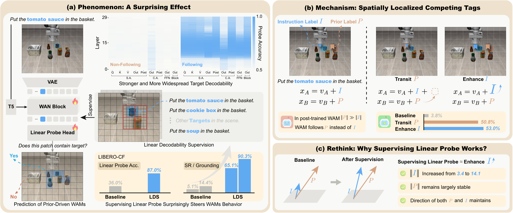
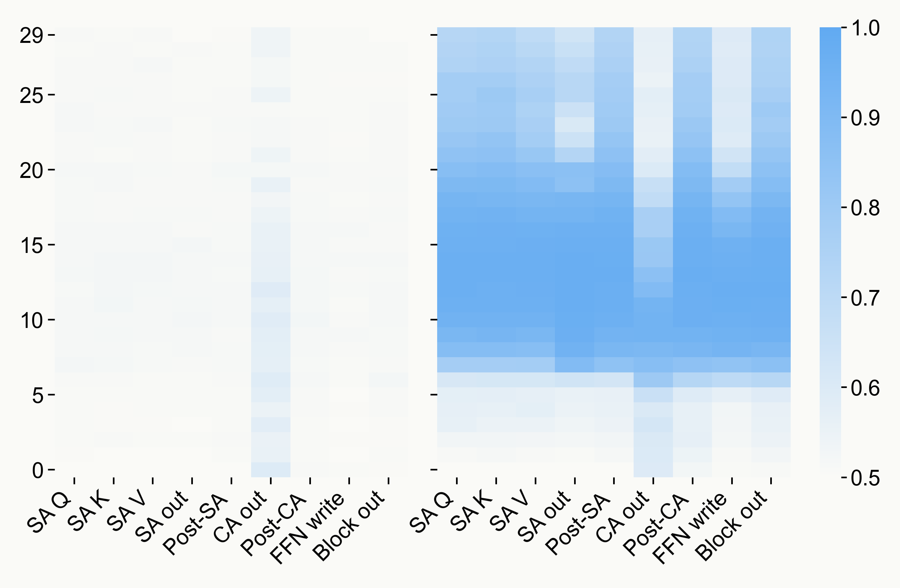
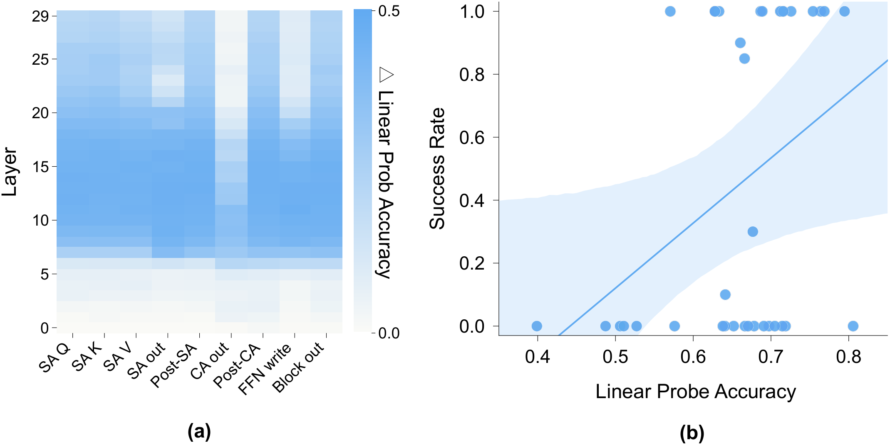
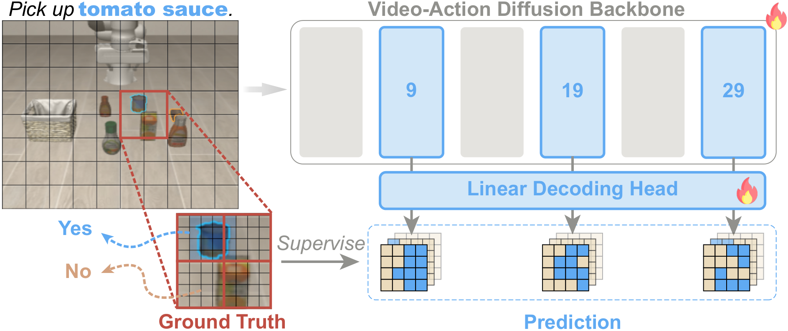
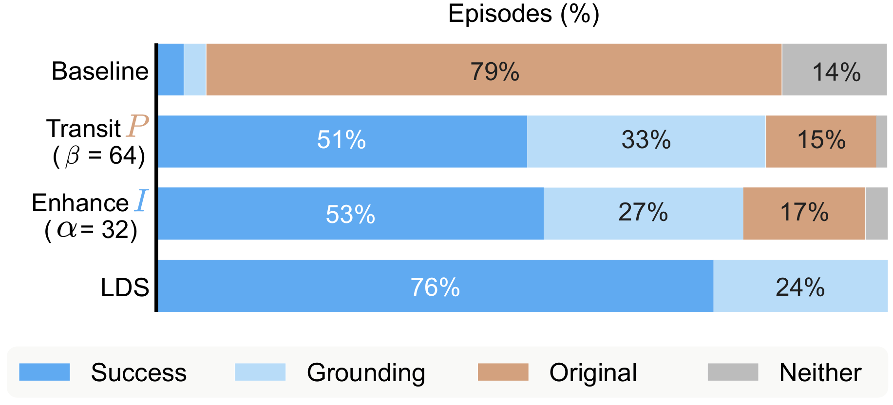
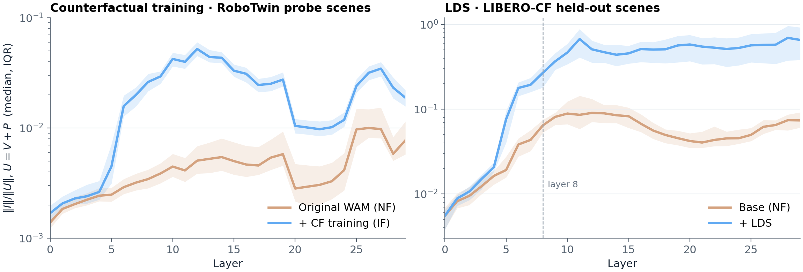
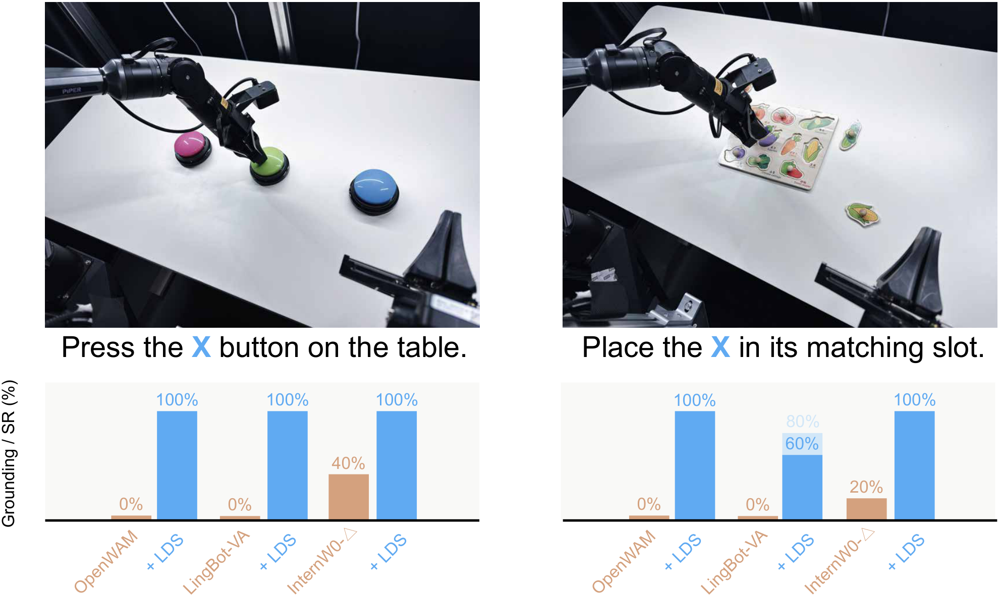

Does the instructed target exist in this patch?
A sample is correct only if the probe recognizes the target object and rejects the non-target object.
World action models / Instruction following
WAMs can encode the instructed target yet still follow a learned prior. We explain this failure as prior–instruction competition, test it with training-free interventions, and show why linear-decodability supervision (LDS) improves behavior even though its linear heads are discarded at inference.

Main results
Success rates
Abstract
World action models (WAMs) exhibit strong manipulation capabilities but often fail to follow test-time language instructions, instead favoring behaviors learned during training. We probe whether instructed-target information is represented in WAMs. Both instruction-following (IF) and non-following (NF) WAMs encode it, but IF WAMs exhibit substantially stronger linear decodability.
This motivates linear-decodability supervision (LDS). LDS dramatically improves instruction following even though the auxiliary readout is discarded at inference. We explain the effect with a prior–instruction competition mechanism: a learned prior signal competes with an instruction-dependent signal in visual representations. Two training-free interventions provide causal evidence, and representation measurements show that LDS predominantly amplifies the existing instruction tag.
Across LIBERO-CF, LangGap, RoboTwin-IF, held-out splits, and real-world tasks, LDS improves instruction following across WAMs and visual domains.
01 / A surprising effect
OpenWAM.
NF versus IF WAMs.
We construct an IF counterpart by fine-tuning an NF WAM on counterfactual demonstrations, in which similar observations are paired with different instructions and behaviors. For OpenWAM, counterfactual training raises IF success on the RoboTwin probe panel from 11.05% to 47.76%.

A sample is correct only if the probe recognizes the target object and rejects the non-target object.
Across instructions, first-frame probe accuracy is positively associated with closed-loop success: slope 2.07, 95% CI [0.15, 3.49].


LDS
Ltotal = LFM + λ Laux
The improvement is surprising because linearly decodable information is not guaranteed to be used by the downstream policy.
02 / Mechanism
Two candidates.
One shared observation.
Consider candidates A and B, where A is favored by the WAM's learned prior. Tags are additive, visual-target-associated components of intermediate visual-token representations.
The prior tag P encodes the learned preference for a visual target. The instruction tag I marks the target specified by the current instruction. Under a counterfactual instruction, P remains on A while I moves to B. IF failures arise when P wins.
Prior-aligned LAxA = vA + P + I, xB = vB
Counterfactual LBxA = vA + P, xB = vB + I
Paired decompositionI = (ΔA − ΔB) / 2, U = (ΔA + ΔB) / 2
U = (vA − vB) + P is the prior-associated component; P cannot be separated independently.
Move the prior-associated component from A toward B, so both tags attach to the instructed target. Grounding: 84.0%.
Amplify the existing instruction tag on B, allowing it to overcome the prior. Grounding: 80.0%.
Baseline: 3.8% success and 7.0% grounding. No model parameters are updated.
03 / Rethinking LDS
Same pattern after
CF training and LDS.
Why amplify I?
A shared readout w must classify both counterfactual instructions correctly:
w⊤(U + I) > 0, w⊤(U − I) < 0
⇒ w⊤I > |w⊤U|
U is invariant when the instruction changes; I changes with it. Amplifying the existing I directly increases the classification margin.
| Quantity | Base | + LDS | Cosine |
|---|---|---|---|
| Instruction tag ‖Ī‖ | 3.4 | 14.1 | 0.90 |
| Prior-associated ‖Ū‖ | 26.1 | 22.9 | 0.95 |
The magnitude of I increases while U changes only modestly; both directions remain largely aligned.

Beyond amplifying I, LDS updates WAM parameters, allowing downstream readers to adapt to shifted activations. Training-free interventions instead apply fixed external coefficients, which may move activations away from the training distribution.
04 / Simulation experiments
LIBERO-CF, LangGap,
and RoboTwin-IF.
LDS is trained for 1,024 steps by jointly optimizing native flow matching and auxiliary grounding loss. Success measures completion of the evaluated instruction; Grounding measures whether the policy reaches the instructed target or destination.
50 tasks × 50 initial states
Faithful (F.) scores the instructed goal; Biased (B.) scores the original training goal.
59 tasks × 10 initial states
Varies manipulated objects, destinations, spatial references, and actions in fixed layouts.
25 Pick + 25 Placement · paired instructions
Uses RoboTwin assets, a first-person head camera, and dual-arm manipulation.
| Model | Setting | Success F.↑ | Success B.↓ | Grounding F.↑ | Grounding B.↓ | LIBERO SR↑ |
|---|---|---|---|---|---|---|
| InternW0-Δ | Base | 23.5 | 60.5 | 37.3 | 63.9 | 96.0 |
| + LDS | 74.6 | 12.3 | 89.2 | 19.5 | 96.8 | |
| LingBot-VA | Base | 12.3 | 48.1 | 32.0 | 59.9 | 89.0 |
| + LDS | 29.8 | 28.9 | 59.3 | 39.4 | 88.2 | |
| OpenWAM | Base | 5.1 | 80.9 | 14.4 | 84.3 | 94.0 |
| + LDS | 65.1 | 11.4 | 90.3 | 19.6 | 89.2 |
InternW0-Δ + LDS is 26.8 and 42.9 percentage points above the strongest baseline in faithful success and grounding.
| Model | Setting | Spatial | Object | Goal | Avg. |
|---|---|---|---|---|---|
| InternW0-Δ | Base | 6.4 | 42.7 | 63.3 | 37.5 |
| + LDS | 57.5 | 94.5 | 62.2 | 71.4 | |
| LingBot-VA | Base | 8.6 | 35.9 | 4.4 | 16.3 |
| + LDS | 18.2 | 36.4 | 10.0 | 21.5 | |
| OpenWAM | Base | 1.1 | 34.1 | 24.4 | 19.9 |
| + LDS | 62.9 | 73.6 | 45.6 | 60.7 |
| Model | Setting | Pick | Placement | Avg. |
|---|---|---|---|---|
| InternW0-Δ | Base | 0.0 / 5.6 | 18.0 / 18.0 | 9.0 / 11.8 |
| + LDS | 61.6 / 90.4 | 33.2 / 34.0 | 47.4 / 62.2 | |
| LingBot-VA | Base | 4.8 / 10.0 | 14.4 / 16.0 | 9.6 / 13.0 |
| + LDS | 34.8 / 88.4 | 13.2 / 20.0 | 24.0 / 54.2 | |
| OpenWAM | Base | 6.0 / 6.4 | 9.2 / 15.6 | 7.6 / 11.0 |
| + LDS | 71.2 / 99.6 | 37.6 / 52.8 | 54.4 / 76.2 |
LDS extends grounding from grasp targets to destinations. OpenWAM + LDS improves success by 57.7 points on LangGap destination-changing tasks and by 28.4 points on RoboTwin-IF Placement.
For LingBot-VA, Placement Grounding rises from 16.0% to 20.0%, but valid grasp acquisition drops from 95.2% to 64.4%, limiting end-to-end success.
Qualitative rollouts
05 / Generalization
Held-out initial states.
Held-out scenes.
Unsup. init uses object poses absent from grounding supervision. Unsup. scene removes all grounding labels from a physical scene. Values are composition-standardized; intervals below each value are task-clustered bootstrap 95% confidence intervals.
InternW0-Δ + LDS · held-out scenes
67.4%LIBERO-CF faithful successInternW0-Δ + LDS · held-out scenes
46.0%LangGap successOn held-out initial states, performance remains close to the supervised group. Held-out scenes are harder, partly because some object identities are not covered by LDS grounding supervision.
| Model + LDS | Sup. | Unsup. init | Unsup. scene | |||
|---|---|---|---|---|---|---|
| F. ↑ | B. ↓ | F. ↑ | B. ↓ | F. ↑ | B. ↓ | |
| OpenWAM | 67.154.1–78.9 | 7.33.7–13.0 | 66.156.0–75.5 | 5.74.5–7.2 | 50.030.6–67.9 | 31.412.9–53.1 |
| LingBot-VA | 29.416.1–43.6 | 24.113.7–36.5 | 31.620.5–43.3 | 23.915.0–34.5 | 27.710.1–46.4 | 23.47.9–42.5 |
| InternW0-Δ | 79.769.2–89.1 | 7.03.7–11.8 | 78.269.7–85.3 | 8.95.3–13.6 | 67.443.2–88.3 | 9.50.0–25.4 |
| Model + LDS | Sup. | Unsup. init | Unsup. scene |
|---|---|---|---|
| OpenWAM | 64.251.5–75.4 | 59.447.8–71.9 | 41.016.5–66.9 |
| LingBot-VA | 19.28.8–31.2 | 20.310.0–31.6 | 28.89.6–57.7 |
| InternW0-Δ | 73.061.2–84.1 | 73.960.4–86.1 | 46.021.5–71.2 |
06 / Real-world experiments
AgileX Cobot Magic.
10 trials per variant and task.

Press-Button. Training data contain only red-button trajectories. At test time, the target is green or blue. With LDS, all three WAMs reach 100% success.
Place-in-Slot. Fixed piece combinations and placement orders make the remaining pieces predictive of the next target. OpenWAM + LDS and InternW0-Δ + LDS reach 100%; LingBot-VA + LDS reaches 80% Grounding and 60% success.
Base and LDS variants use the same biased trajectory data; LDS adds first-frame target-localization supervision.
Conclusion
WAMs can encode instructed targets yet act on learned visual priors. Prior–instruction competition explains how an existing instruction signal can be outweighed by a stronger prior. Training-free interventions provide causal support, and LDS explains and improves instruction following across simulation and real-world settings.